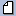
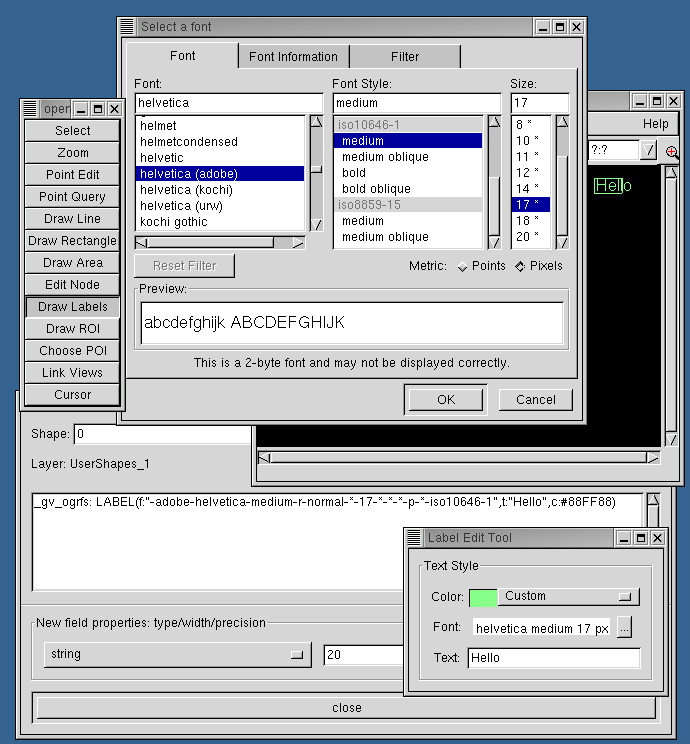
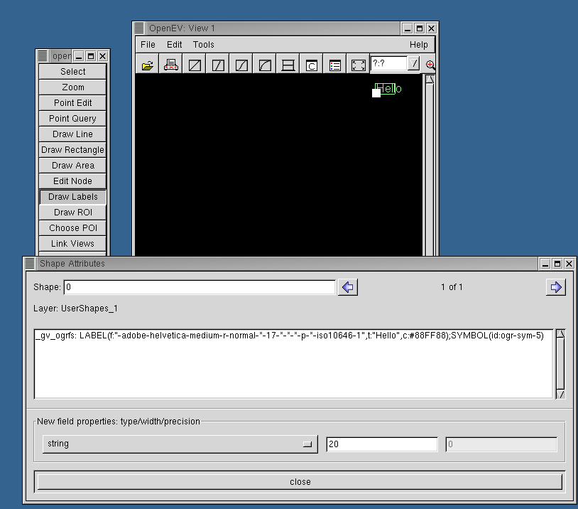
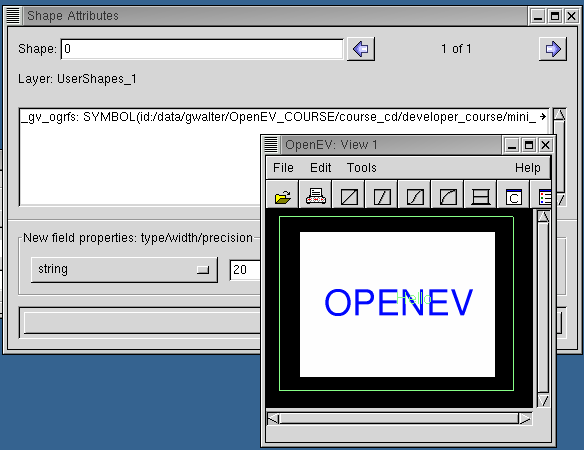
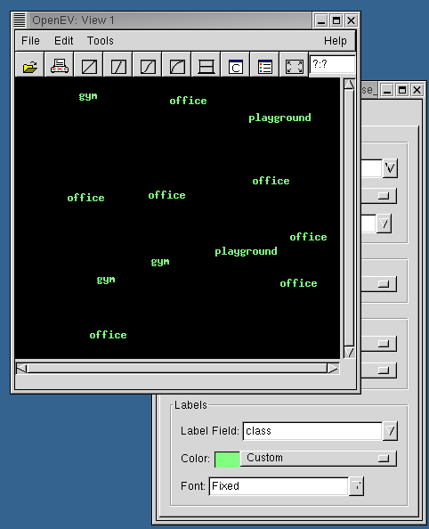
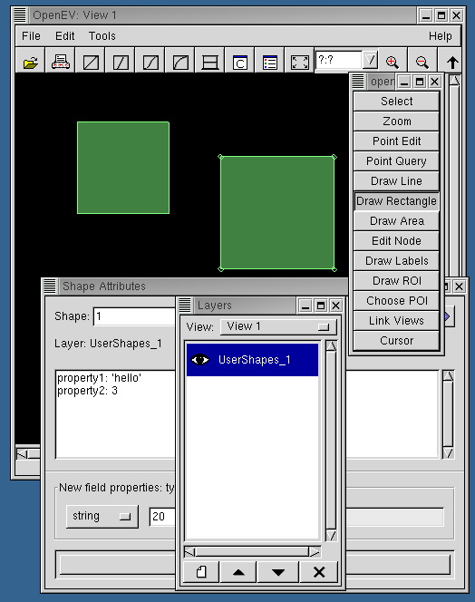

Developer Tutorial 1: Working with Vectors
The first part of this tutorial demonstrates the mechanism that OpenEV uses for
displaying points and polygons. Start by loading up the shapefile examined
in the General Overview:
- In a new view, load up the file "DEVCOURSE_vector_classes.shp" from openev's html
directory.
- Launch the vector layer properties dialog by right-clicking on the
DEVCOURSE_vector_classes.shp layer in the layer dialog.
- Alter the edge and fill colours of the polygons using the "Areas" section under
the "Draw Styles" tab.

- Launch the vector attributes dialog (Edit->Vector Layer Attributes), and select
one of the polygons by left-clicking on it. Each polygon has a an attribute called
"class" that has a value of "office", "gym", or "playground".
- Click
 to bring up the classification dialog
for vector layers, and apply one of the ramps. This should colour the polygons according
to their class. If a vector file has several attribute fields, the menu bar in the
top right corner of the dialog will allow you to choose which one the classification
should use to distinguish between polygons.
to bring up the classification dialog
for vector layers, and apply one of the ramps. This should colour the polygons according
to their class. If a vector file has several attribute fields, the menu bar in the
top right corner of the dialog will allow you to choose which one the classification
should use to distinguish between polygons.

After the classification ramp has been applied, re-select a shape to
refresh the vector properties dialog. A new field, "_gv_ogrfs" appears as
a property in each shape. This is the field that openev uses to specify how that
shape should be displayed. The "BRUSH" section indicates fill colour (for the
"office" class, this is yellow, or "ffff00ff" when expressed in red-green-blue-alpha
form). The "PEN" section indicates edge colour. The vector attributes dialog
specifies properties of a layer; these are over-ridden by the "_gv_ogrfs" field.
For point shapes, this field can also be used to specify the symbol to use to
represent the point, and to indicate any labelling. For instance, setting
_gv_ogrfs for a point shape to the string:
LABEL(dy:-10.0,dx:10.0,t:{Alias},f:"-adobe-helvetica-medium-r-normal-*-*-240-*-*-p-*-iso10646-1",c:#FEFF06);SYMBOL(c:#FF00FFFF,id:ogr-sym-5)
creates a magenta (c:#FF00FFFF) filled square (id:ogr-sym-5) symbol with a yellow (c:#FEFF06)
helvetica font (f:"-adobe-helvetica-medium-r-normal-*-*-240-*-*-p-*-iso10646-1") label based on
the contents of the point shape's Alias field (t:{Alias}). The label is offset 10 pixels in the x
and y directions from the symbol (dy:-10.0,dx:10.0). The symbol may be one of the vector symbols
(ogr-sym-*) or a raster symbol (in this case, id should be a path to the raster file to use). The
label text can be derived from a field (as above), or specified directly (eg. t:"Hello" instead of
t:{Alias} would write "Hello" as a label).
- Launch a new view, create a new shapes layer by pressing  on
the Layers dialog, and select "Draw Labels" on the toolbar ("Edit->Edit Toolbar").
- Place the mouse over the OpenEV view area, and press "Enter" on the keyboard.
- From the "Label Edit Tool" dialog that appears, select Font: helvetica (adobe),
Font Style: medium, Size: 17 pixels.
- In the "Label Edit Tool" Text entry box, type "Hello", then move the mouse over the view
area again. The "Hello" label should appear.

- In the "Shape Attributes" dialog, add ";SYMBOL(id:ogr-sym-5)" to the end of the _gv_ogrfs
property, then place the mouse over the view again. You should see a filled square appear
next to the "Hello" label.

If you press "Select" on the Edit toolbar and then left-click on the label, a box should appear around
the label.
- Change the symbol id from "ogr-sym-5" to "ogr-sym-7" (a filled triangle should replace the square),
then to the full path to DEVCOURSE_mini_raster.tif (eg. SYMBOL(id:/data/openev/html/DEVCOURSE_mini_raster.tif).

One quirk of this mechanism is that if there isn't room for the raster to appear as an icon (if it is
too large for the current zoom level and part of it would be outside the zoom area), it doesn't appear at all.
There is no scaling mechanism for raster icons yet.
- In addition to the manual methods used above, labels based on shape properties can be added to
points layers through the vector attributes dialog. This uses a similar mechanism to the one described
above to alter the display, but provides a simpler interface. In this case, the "_gv_ogrfs_point" property
is set on the layer as a whole rather than the "_gv_ogrfs" property being set on individual shapes.
Load up the file "point_classes.shp" from
the "developer_course" directory on your cd. This contains several shapes with a single attribute,
"class", that is either "office", "gym", or "playground". Right-click on the point_classes.shp layer
on the layer dialog to bring up the vector layer properties, and click on the "Draw Styles" tab.
Under the "Labels" section, change Label Field from "disabled" to "class". The points should now
be displayed as labels. The symbol used can also be changed, using the "Points" section of the dialog.

The next part of this tutorial manipulates vector (GvShapes) objects in the
OpenEV python shell to demonstrate some of their features. Create a shapefile:
- Launch openev
- Launch toolbar (Edit->toolbar)
- Select "Draw Rectangle" on the toolbar
- On layer dialog, click the icon
- On the view, left-click and drag out two rectangles
- Launch the vector attributes dialog (Edit->Vector Layer Attributes)
- Select "Select" on the toolbar
- Left click on a shape to select it
- Add a property to the shape by typing "property1: 'hello'
in the shape attributes box. Click "Yes" when it asks you
if you want to create the new property- this will allow
it to be saved later.
- In the Shape Attributes dialog, select "integer" from the field
properties menu and add a new property "property2: 3"
- Add these properties to the second rectangle, using different values.

- Save the file as a shapefile (shape_example.shp) using
File->Save Vector Layer
- Launch the python shell (Edit->Python shell)
In the python shell, enter:
- import gview
- sshapes=gview.GvShapes(shapefilename='/full path/shape_example.shp')
This reads in the shapefile and creates a GvShapes object (sshapes) from its contents.
Now enter:
This gets a list of the properties stored in the shapefile.
Now enter:
- sshapes[0].get_properties()
This accesses the first GvShape in sshapes, and will show the values of
the properties you entered for it.
Now enter:
This returns the number of nodes in the shape- 5 for a rectangle, because
the last and first nodes are the same. You can use:
To get the location of the first node (and similar for the others). There
is also a set_node function. More complicated shapes may have
multiple "rings" (the main encompassing ring plus areas
cut out of it). In these cases, you must enter the ring
number along with the node number in the get_node and set_node functions,
to specify which ring's nodes you are accessing (the default is ring 0,
which is fine for simple, 1-ring shapes)
You can type dir(gview.GvShapes) and
dir(gview.GvShape) to see other functions associated with shape collections
and individual shapes.
OpenEV allows you to draw 3 types of shapes: points, lines, and polygons, and
it will allow you to draw any of them in a given layer. However, it is
important to note that the specification only allows one type of
shape to be saved to a given shapefile, so saving the layer as a vector file
will only save the shapes of one type.
Next, we will turn the GvShapes object into a GvShapesLayer, ie. a collection
of shapes that knows how to draw itself, as opposed to just a collection
of shapes:
- sshapes_layer=gview.GvShapesLayer(shapes=sshapes)
Create a new view to work in (File->New View), and make sure it is
the active one by clicking on it, and by making sure it appears as the
current view in the layer dialog box.
Get a handle to the GvViewArea in this view using the fact that openev
set gview.app to the main application during initialization:
- cview=gview.app.sel_manager.get_active_view()
This grabs the active view through the selection manager, which is an object
that keeps track of all layers, views, and selections in the application.
Now, add the layer to the view:
- cview.add_layer(sshapes_layer)
Now create a new shape:
- new_shape=gview.GvShape(type=gview.GVSHAPE_AREA)
- new_shape.set_node(1.0,1.0,0.0,0)
- new_shape.set_node(1.0,10.0,0.0,1)
- new_shape.set_node(10.0,10.0,0.0,2)
- new_shape.set_node(10.0,1.0,0.0,3)
- new_shape.set_node(1.0,1.0,0.0,4)
Add it to the collection:
sshapes.append(new_shape)
The new shape should appear in the view.
Next
Developer Course Outline
OpenEV Main